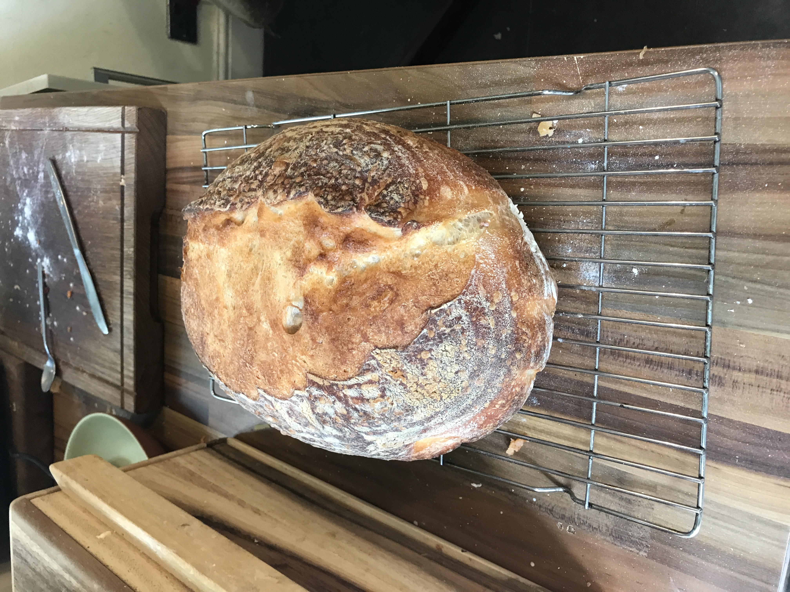
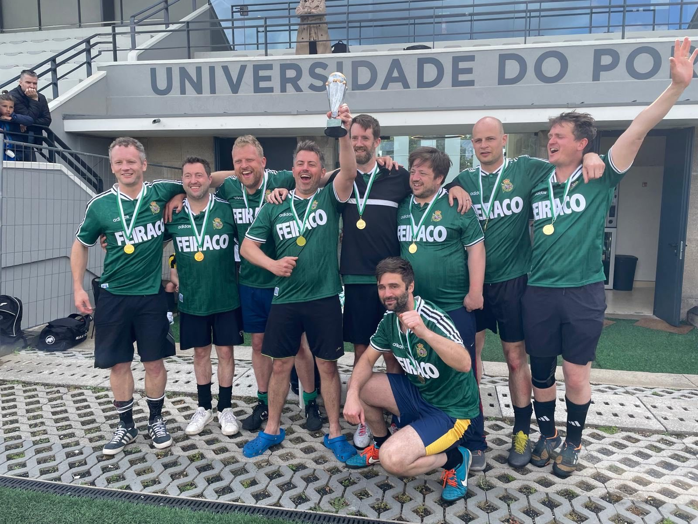

Henry Pescod
I’m a data analyst and entreprenuer based in London. I love to answer questions with data, adding impact to businesses & teams and learning new things. Get in touch at henry.pescod@gmail.com or @henrypescod or LinkedIn.
From Crafting Beers to Crafting Insights: My Journey to Data Analytics

When I was 35, I did what every middle-aged man dreams of (or so the saying goes)—I opened my own bar. A friend and I brewed our own beer, built a brand, and launched a pub in South East London. Over the next six years, we brewed multiple beers, employed 36 staff, and generated over £1 million in revenue. The pub served its final pint at the end of June 2024, marking the end of a memorable chapter. But what has all this got to do with me wanting to be a data analyst? The experience taught me a lot, but there are three key reasons why it led me here.
I Love Analysing Data

Running a bar isn't just about serving drinks; it's about making decisions based on the data in front of you. I found myself drawn to the analytical tasks more than any other part of the business. For example:
- I used our point-of-sale data to track beer wastage, figure out which beers to brew most often, and plan brewing schedules to meet demand.
- I analysed our banking data to find cost-saving opportunities, like switching point-of-sale providers and banks, which helped keep us in the black. I dug into our bookkeeping data to explore business changes, such as opening and closing the kitchen based on profitability.
These experiences showed me that my real passion lies in analysing data and making data-driven decisions, not just in the bar but beyond it. That’s why I decided to focus on a career in data analytics, where I can do just that in a more defined role.
My Curiosity and Drive for Mastery

Now, a bit of context. The bar was actually a side project. While running it, I continued my career as a programme manager. Up to this point, I had a varied career as a negotiator, numbers guy, and project manager. I sold office buildings, created financial models for property investors, and even built a hotel out of shipping containers. But I’ve always been curious, and I had an itch to try something new. Opening the bar scratched that itch—I proved I could build something from scratch. But now, I’m ready for a new challenge. I want to learn, develop, and master something bigger, and that’s where data analytics comes in.
I’m Good at Problem-Solving

Running a bar, especially during tough times like the COVID-19 lockdowns, threw plenty of problems my way. When we faced a cash flow crisis during the first lockdown, I came up with a plan to raise funds by selling membership packages and pre-selling beer. We raised £13k, sold all our stock, and managed to keep the business going until we could reopen. This experience reinforced my knack for problem-solving, a skill that’s just as crucial in data analytics when you’re faced with complex challenges and tight resources.
Project A

To assist sports marketing team I created a dashboard in Tableau enabling stakeholders to scout good value players across a dataset of 180,000 players.
Project B

Some text about the 2Market project
Project C

Some text about the NHS project
Baking
I've been baking sourdough loaves for 4 years - here's a gallery of my progress.
Football
I've been running a 6-a-side football team for lost Geordies for the past 15 years. We've played in 5 international tournaments.